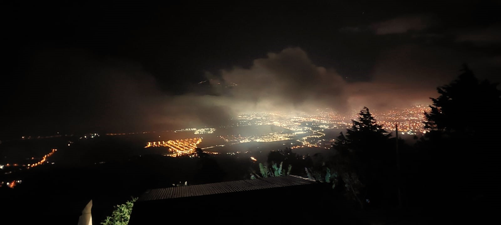
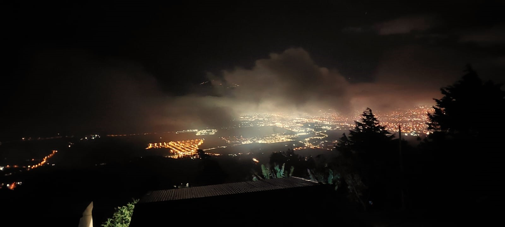

Experiencias de mis compañeros al Refugio Silvestre Vistas del cielo
Experiencia de mis compañeros sobre la gira
Entrevistando a algunos de mis compañeros, su experiencia fue bonita y agradable,
la comida estaba bien pero para algunos estaba terrible.
Dijeron que el lugar es muy bonito y divertido aunque tenía un clima muuuuy frío.
Algunos aprendieron a compartir con otros compañeros con los cuales no había mucha cercanía, por lo tanto creo que es un buen lugar para compartir con personas importantes: familiares o amigos.
Mi opinión
En fotos y videos que vi por internet se ve que es un lugar muy bonito y que me hubiera encantado ir pero debido a permisos que no me dieron no me dejaron
pero sin duda espero visitar algún día este lugar.
Fotos sacadas de la página Web y algunas que tomaron mis compañeros.


 
